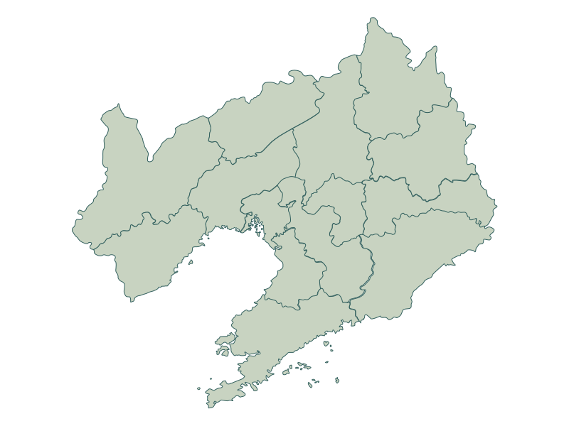

01 / 物产探索
循线索，
检索辽宁风物
这里没有货架式分类。请选择一条自然、风物或生长线索，让档案之间的隐秘关联浮现。
山海线索
风物线索
生长线索
城地线索
正在阅览：全部档案
这条线索暂未收录物产档案，请尝试其他检索方向。
02 / 成长链叙事
从自然，
到一方物产
一件物产并非孤立生成。它穿过地貌、气候、劳作与技艺，最终成为一地可被感知的文化记忆。
选择档案链
辽河湿地 / 盘锦
稻香从湿地升起
河海退积形成的平原与充足水系，为一粒稻米建立了独特的生命坐标。
03 / 产区图谱
物产不是点，
而是地域关系
点击图谱中的地域节点，查看自然区域与代表物产之间的关联网络。
LN-PRODUCT-ATLAS / 09 ORIGIN POINTS
全域总览 · 关系线待开启

LIAONING PRODUCT ORIGIN ARCHIVE / 经纬参考 38°—43°N
05 / 风物互动游戏
在游戏中，
识别辽宁风物
通过物产识别、产区匹配和路线挑战，将辽宁物产档案从静态浏览转化为可参与的互动体验。
06 / 我的辽宁物产路线
把读过的风物，
连成你的辽宁
收藏感兴趣的物产，系统将依据它们所在的山海坐标，生成一条属于你的认知路径。
自动生成 / AUTO
LIAONING CHECK-IN ROUTE / 你的路线名称
等待一条线索
至少收藏一件物产，我们将从它的自然环境出发，为你书写一条辽宁物产认知路径。
起点待定→路径生成中